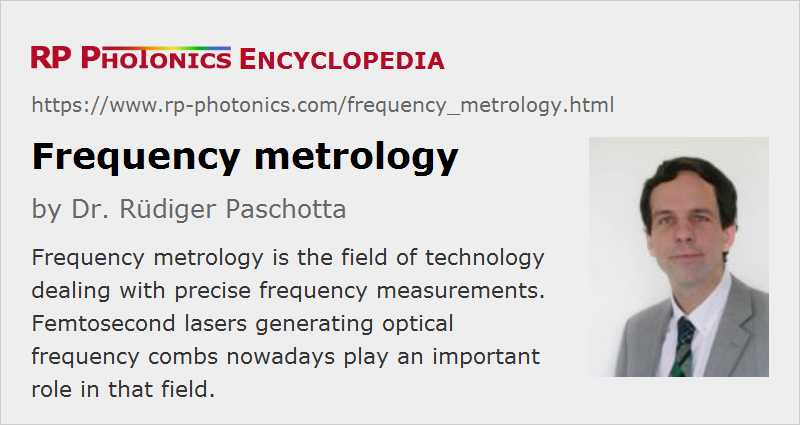

Frequency Metrology
Definition: the field of technology dealing with precise frequency measurements
More general term: optical metrology
German: Frequenzmetrologie
How to cite the article; suggest additional literature
Author: Dr. Rüdiger Paschotta
This article is focused on optical frequency metrology, even though the connection from optical to microwave frequencies is also of central importance. For a range of applications it is necessary to determine accurately the absolute frequencies of optical signals. For the highest precision, it is not sufficient to measure a wavelength and convert it into a frequency by using the vacuum velocity of light as defined within the International System of Units (SI system): the accuracy of wavelength measurements (e.g. with wavemeters) is limited by effects such as wavefront distortions. Much higher accuracy can be achieved with real frequency measurements, where an optical frequency, or a difference between two optical frequencies, is related to a microwave reference. Note that the second as the basic time unit is currently defined in the SI system of units via a 9.19-GHz microwave frequency of a certain transition between hyperfine levels of the cesium-133 atom.
Frequency Differences and Absolute Frequencies
A relatively easy task is to compare the difference between two optical frequencies with a microwave reference, using a beat note, if this frequency difference is of the order of some tens of gigahertz or less. One simply superimposes the two beams on a fast photodetector and thus obtains an electronic beat signal. The latter can then be compared with a microwave reference either by counting the cycles or by monitoring an electronic beat between the two microwave signals.
A much more difficult task is to measure absolute optical frequencies. An early approach, taken by several metrology laboratories in the world, was based on a frequency chain which started with a stable microwave reference (linked to a cesium atomic clock) and generated exactly known higher frequencies with a number of other oscillators. The frequencies of the latter were connected to the lower frequencies by recording beat signals with harmonics of the lower-frequency signals, and automatically adjusting the oscillator frequencies so as to maintain given beat frequencies. Various kinds of nonlinear devices (Schottky diodes, metal–insulator–metal diodes, and nonlinear crystals) were used for generating harmonics in different spectral regions. By operating the intermediate oscillators as so-called fly-wheel oscillators, good temporal coherence could be achieved all the way from the RF region to microwaves, the far- and mid-infrared regions and further to visible light.
Frequency Comb Techniques
In the late 1990s, a new technique based on frequency combs from mode-locked lasers revolutionized optical frequency metrology. It is based on the fact that the optical spectrum of the output of a mode-locked laser consists of a comb of exactly equidistant lines (disregarding noise influences). This means that such a frequency comb is determined by only two parameters: the frequency spacing (which equals the laser's pulse repetition rate) and the absolute position, specified as the carrier–envelope offset frequency. If these two parameters can be related to a microwave reference, all optical frequencies of the comb are known. Subsequently, any optical frequency within the range of the comb can be measured by determining beat frequencies with comb lines.
Obviously, the frequency comb technique is much simpler than that based on a traditional frequency chain, and it makes it possible to construct very compact frequency reference sources and frequency measurement devices. Moreover, it delivers closely spaced lines of known frequencies in a wide spectral range, allowing for frequency measurements in this wide range, rather than only around a single optical frequency as for a frequency chain. Nowadays, frequency comb laser sources are commercially available and are beginning to be widely used for metrology purposes.
Technological and Scientific Applications
There can be no doubt about the technological and scientific importance of frequency metrology. The next generation of atomic clocks will be based on optical frequency standards, combined with optical clockworks. Such optical clocks would allow time or frequency measurements with a precision beyond that of the currently used cesium atomic clocks, which already let the frequency be the physical quantity which can be measured with by far the highest precision.
Extreme precision in time measurements has many technological implications, as is obvious even considering only the many existing or envisaged applications of the American GPS system and the European Galileo project. The measurement of other physical quantities such as electrical voltages and currents and also magnetic field strengths can also strongly profit from accurate and precise frequency standards. Furthermore, the clarification of fundamental scientific questions depends on ultraprecise time or frequency measurements; for example, such measurements are vital for checking whether there might be any time dependence of certain quantities (e.g. the fine structure constant α) which are so far considered as physical constants. If any changes of such quantities could be detected, this would have a profound impact on future theoretical descriptions of most fundamental phenomena. Also, some kinds of scientific devices, such as free electron lasers for the generation of ultrashort pulses and arrays of radio telescopes for astronomy, require extremely precise timing synchronization of different parts, which can e.g. be done with actively stabilized fiber-based timing links.
Suppliers
The RP Photonics Buyer's Guide contains 7 suppliers for frequency metrology equipment. Among them:
Questions and Comments from Users
Here you can submit questions and comments. As far as they get accepted by the author, they will appear above this paragraph together with the author’s answer. The author will decide on acceptance based on certain criteria. Essentially, the issue must be of sufficiently broad interest.
Please do not enter personal data here; we would otherwise delete it soon. (See also our privacy declaration.) If you wish to receive personal feedback or consultancy from the author, please contact him e.g. via e-mail.
By submitting the information, you give your consent to the potential publication of your inputs on our website according to our rules. (If you later retract your consent, we will delete those inputs.) As your inputs are first reviewed by the author, they may be published with some delay.
Bibliography
| [1] | T. Udem et al., “Absolute optical frequency measurement of the cesium D1 line with a mode-locked laser”, Phys. Rev. Lett. 82 (18), 3568 (1999), doi:10.1103/PhysRevLett.82.3568 |
| [2] | T. Udem et al., “Accurate measurement of large optical frequency differences with a mode-locked laser”, Opt. Lett. 24 (13), 881 (1999), doi:10.1364/OL.24.000881 |
| [3] | S. A. Diddams et al., “Direct link between microwave and optical frequencies with a 300 THz femtosecond laser comb”, Phys. Rev. Lett. 84 (22), 5102 (2000), doi:10.1103/PhysRevLett.84.5102 |
| [4] | J. Stenger et al., “Ultraprecise measurement of optical frequency ratios”, Phys. Rev. Lett. 88 (7), 073601 (2002), doi:10.1103/PhysRevLett.88.073601 |
| [5] | T. Udem, R. Holzwarth and T. W. Hänsch, “Optical frequency metrology”, Nature 416 (6877), 233 (2002), doi:10.1038/416233a |
| [6] | H. R. Telle et al., “Kerr-lens mode-locked lasers as transfer oscillators for optical frequency measurements”, Appl. Phys. B 74, 1 (2002), doi:10.1007/s003400100735 |
| [7] | T. Udem et al., “Optical frequency metrology”, Nature 416, 233 (2002), doi:10.1038/416233a |
| [8] | J. Kim et al., “Drift-free femtosecond timing synchronization of remote optical and microwave sources”, Nature Photon. 2, 733 (2008), doi:10.1038/nphoton.2008.225 |
| [9] | M. Lezius et al., “Space-borne frequency comb metrology”, Optica 3 (12), 1381 (2016), doi:10.1364/OPTICA.3.001381 |
| [10] | NIST Time and Frequency Publication Database, https://tf.nist.gov/general/publications.htm |
| [11] | International System of Units (SI), http://www.bipm.fr/en/si/ |
| [12] | For German readers: R. Paschotta, “Frequenzkämme und optische Frequenzmetrologie”, Photonik 3 / 2006, p. 60 |
(See also the references in the articles on frequency combs and optical frequency standards.)
See also: optical frequency, frequency combs, optical frequency standards, optical clocks, optical clockworks, beat note, stabilization of lasers, synchronization of lasers, laser absorption spectroscopy
and other articles in the category optical metrology
|  |
If you like this page, please share the link with your friends and colleagues, e.g. via social media:
These sharing buttons are implemented in a privacy-friendly way!